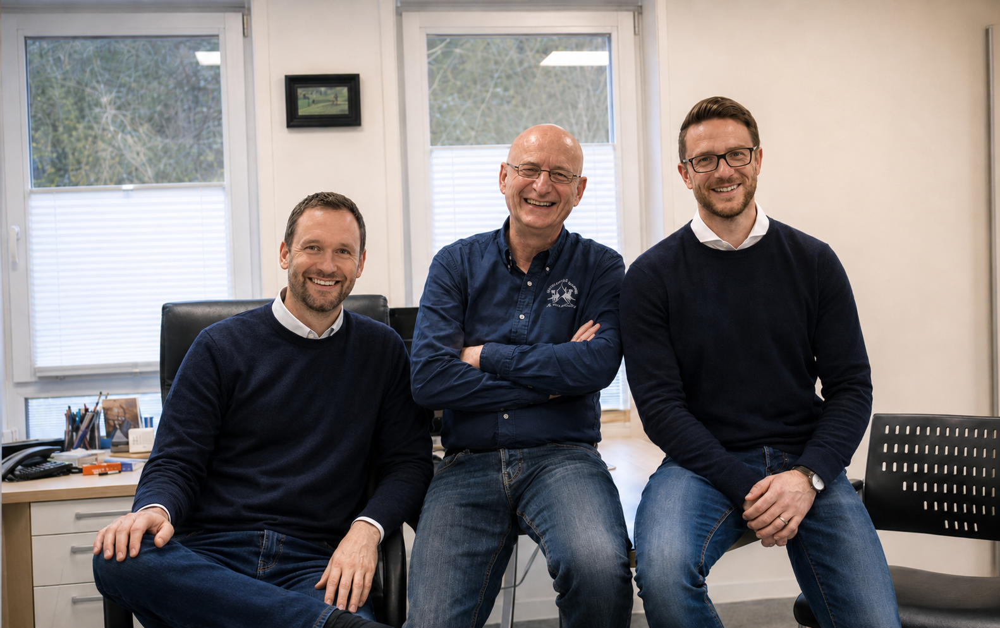

Allgemeinmedizinische Versorgung
Akute und chronische Erkrankungen, Behandlung über alle Altersgruppen hinweg, Begleitung über Jahre.
Hausärztliche Vollversorgung mit moderner Diagnostik. Wo sinnvoll, besprechen wir gemeinsam die nächsten Schritte — auch eine Überweisung, wenn sie weiterhilft.
Akute und chronische Erkrankungen, Behandlung über alle Altersgruppen hinweg, Begleitung über Jahre.
Check-up 35, Hautkrebs-Screening, Krebsvorsorge — wir erinnern Sie gerne an die nächste fällige Untersuchung.
Alle empfohlenen Impfungen nach STIKO. Reiseimpfberatung auf Anfrage.
DEGUM-zertifizierte Ultraschalldiagnostik durch Dr. Gloßner — Schilddrüse, Bauchorgane, Gefäße. Schonend, ohne Strahlung, oft direkt mit Befund.
In Pielenhofen jederzeit zu den Sprechzeiten. In Wolfsegg ebenfalls möglich.
Zwei notfallmedizinisch ausgebildete Ärzte im Haus — schnelle, kompetente Hilfe in akuten Situationen.
Die elektronische Arbeitsunfähigkeitsbescheinigung wird direkt an Ihre Krankenkasse übermittelt — ohne Papierweg, ohne Umweg.
Bei Bedarf und nach Absprache besuchen wir Patientinnen und Patienten zuhause, die nicht in die Praxis kommen können.

Hinter jedem Termin stehen drei Ärzte, die sich kennen, vertrauen und ergänzen. Was einer nicht abdeckt, übernimmt ein anderer — immer mit dem gleichen Anspruch: gute Medizin, die Zeit hat.
Das Team kennenlernen